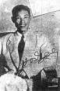

Hồ Dzếnh
(1916-1991)
Ông tên thật là Hà Triệu Anh (Hồ Dzếnh là phiên âm của Hà Anh theo giọng Quảng Đông).
Ông sinh năm 1916 tại làng Đông Bích huyện Quảng Xương tỉnh Thanh Hóa. Cha là người Quảng Đông, sang sinh sống ở Việt Nam từ khoảng 1890, mẹ là người Việt.
Hồ Dzếnh ra Hà Nội học trung học, dạy tư, viết thơ, viết báo từ năm 1931. Năm 1953 vào Sài Gòn làm báo, năm 1954 trở về Hà Nội viết báo, làm thơ.
Ông mất ngày 13 tháng 8 năm 1991 tại Hà Nội.
Tác phẩm tiêu biểu: các tập thơ Quê Ngoại (1942), Hoa Xuân Đất Việt (1946); tập truyện ngắn Chân Trời Cũ (1942); và các tiểu thuyết Một Truyện Tình 15 Năm Về Trước (1942); Những Vành Khăn Trắng (1946).
Sự pha trộn của hai giòng máu chi phối nhiều sáng tác của tác giả. Tập thơ Quê Ngoại gây được nhiều ấn tượng nhất với những lời thơ êm đềm, nhẹ nhàng, trong sáng, và những cảm xúc đằm thắm chân thành dành riêng cho "quê ngoại" thân thương.
Tài liệu tham khảo
Quê Ngoại, Hồ Dzếnh, NXB Hội Nhà Văn tái bản, 1995.
Hồ Dzếnh. Tác Phẩm Chọn Lọc, NXB Văn Học, Hà Nội, 1988.
Tổng Tập Văn Học Việt Nam, tập 27, NXB Khoa Học Xã Hội, Hà Nội, 1990.
Chân Trời Cũ, Hồ Dzếnh
Việt Nam Thi Nhân Tiền Chiến, Nguyễn Tấn Long & Nguyễn Hữu Trọng
Thi Ca Việt Nam Hiện Đại, Trần Tuấn Kiệt
Tuyển Tập Thơ Tiền Chiến, Hoài Việt biên soạn
Thơ Mới -- Những Bước Thăng Trầm, Lê Đình Kỵ
Hoa cười nguyệt rọi cửa lồng gương
Lạ cảnh buồn thêm nỗi vấn vương
Tha thướt liễu in hồ gợn bóng
Hững hờ mai thoảng gió đưa hương
Xa người nhớ cảnh tình lai láng
Vắng bạn ngâm thơ rượu bẽ bàng
Qua lại yến ngàn dâu ủ lá
Hòa đàn sẵn có dế bên tường.